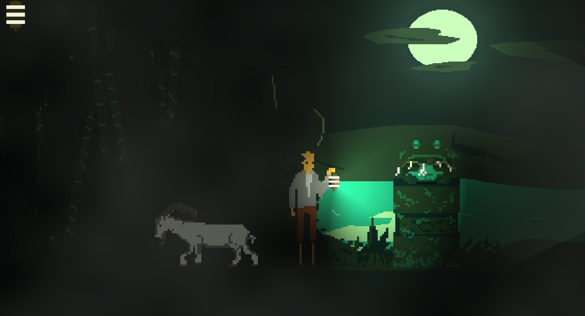
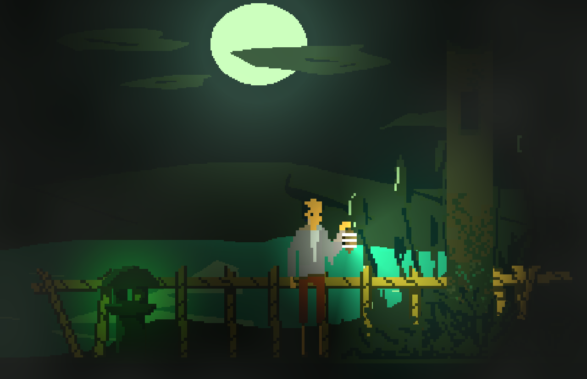
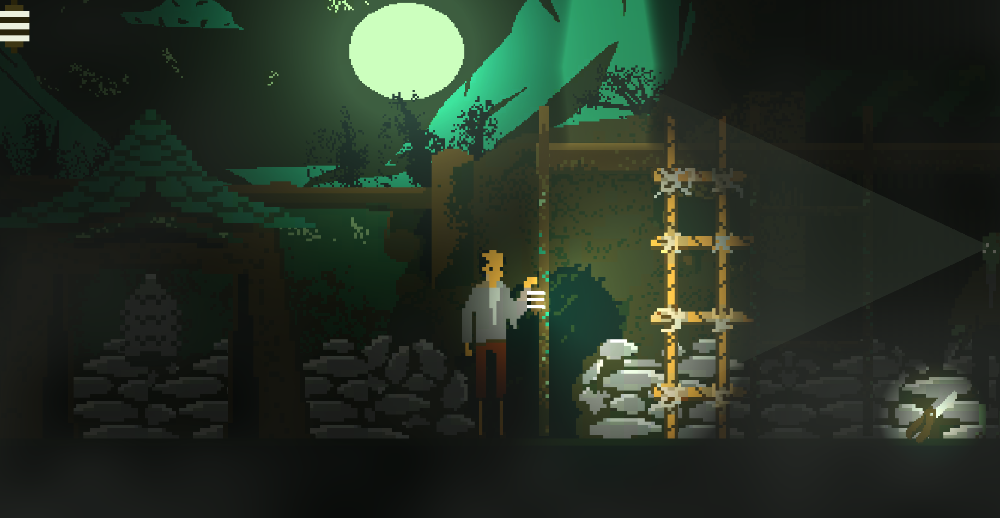

Gou - A Game Jam Project
I participated in the 2025 Horror Minu Jam where we created a game called Gou. In this game, you play as a fishermen suriviving and exploring an old village on feudal japan. The Jam Lasted 72 hours and we are very proud of the result. You can find the project on my GitHub repository: Gou.
You can also play the game on itch.io with webGL:
Gou on itch.io.
On this project, I worked on the VFX, Pixel Art, and Design. Some examples are:
- The design of some puzzles, including logic-based challenges and environmental storytelling to enhance player immersion.
- Mist VFX, which added an eerie and atmospheric touch to the game, enhancing the horror theme.
- All the pixel art, including character sprites, environment tiles, and props, ensuring a cohesive and visually appealing aesthetic.
- Map design, carefully crafting the layout of the village to balance exploration, challenge, and narrative flow.
- Animations, such as character movements and environmental effects, to bring the game world to life and improve player engagement.
Here are some images from the project:



The Development Team:
- Andres - Programming, Desing
- Fran - Programming, Desing
- Daniel Pascual - VFX, Pixel Art, Animation, Desing
- Anais - Music